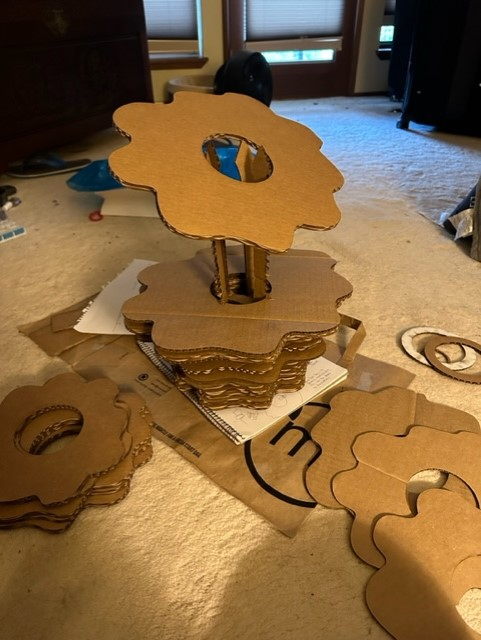

Jody's Assignment 1

Here is my documentation for assignment 1:
Preliminary Sketches and Calculations (Pre-Calculator:)

Preliminary Paper Model:
Brainstorming (Ideas that were too complicated):
Failures and Experiments in Ai and Rhino:
Final Component Specs and Laser Cutter Ai Files for Plates, 7 and 8 inches:
Final Component Specs and/or Laser Cutter Ai Files for Plates, 9-15 inches:

Final Draft Attempts in Rhino:
Stalks
Stalks and Plates in Rhino:
Extruded Plate:
Assembly of Laser-Cut Pieces and Final Result (Lessons Were Learned)
I found numerous flaws in my design upon assembly. For the “stalks” I had printed, I had used cardboard that was too thin. The prongs between the notches could not stand up to the repeated pressure of the rings coming over them. The difficulty in seeing notch fits as the prongs degraded caused some plates to hang at angles, and the stalks to
push away from each other, making the circles in the centers of the rings too big. I had to hastily design some inner pieces to try and keep tension between the stalks so they’d press their notches into the rings. This was only a bit successful. Plates have revolved, so they aren’t in line, and the pumpkin looks messy. I should have done a much
simpler design. We also did not realize the Laser Cutter had gotten stuck on the 7 in. plate print job, so it didn’t print the 8 and 9-inch plates, leading to a columnar effect on
The pumpkin. I did not have enough cardboard to correct this, but staff assured me the problem with the print jam was not my fault.